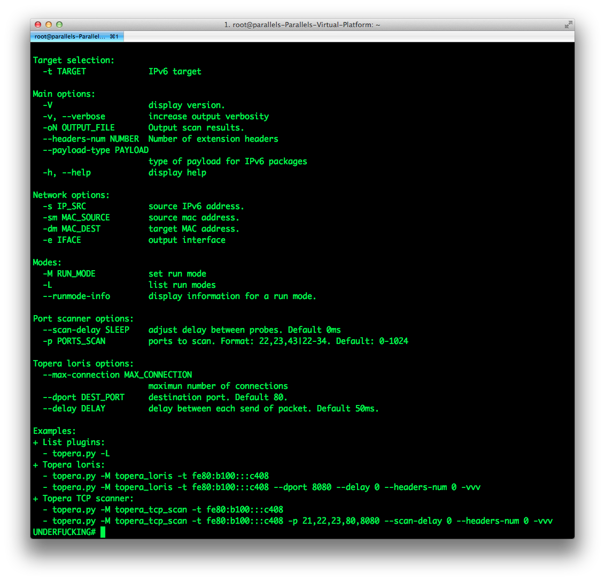

What's Topera?
Topera is a new security tools for IPv6, with the particularity that their attacks can't be detected by Snort.
Snort is the most known IDS/IPS and is widely used in many different critical environments. Some commercial tools (Juniper or Checkpoint ones) use it as detection engine also.
Mocking snort detection capabilities could suppose a high risk in some cases.
All the community is invited to test it in any environment and we would be thankful if you send us any feedback.
This tool was presented in the second edition of the Security Conference "Navaja Negra" (http://www.navajanegra.com) by Daniel Garcia a.k.a cr0hn (@ggdaniel) and Rafa Sanchez (@r_a_ff_a_e_ll_o ).
What's new?
New version of Topera (0.0.2) include these improvements:
- Slow HTTP attacks (Slowloris over IPv6).
- Improved TCP port scanner.
Why?
Our intention is to promote awareness of and show the security implications of IPv6.
How to use it?
Help
List plugins:
# topera.py -LTopera loris mode:
Run with default options:
# python topera.py -M topera_loris -t fe80:b100:::c408Run specifing: destination port, delay between connections, and number os extensions headers:
# python topera.py -M topera_loris -t fe80:b100:::c408 \
--dport 8080 --delay 0 --headers-num 0 -vvvTopera in TCP port scanner mode:
Run with default options:
# python topera.py -M topera_tcp_scan -t fe80:b100:::c408Run specifing: ports to scan, delay between connections, and number os extensions headers:
# python topera.py -M topera_tcp_scan -t fe80:b100:::c408 \
-p 21,22,23,80,8080 --scan-delay 0 --headers-num 0 -vvvVideo
Contact
You can contact with us at this mail: